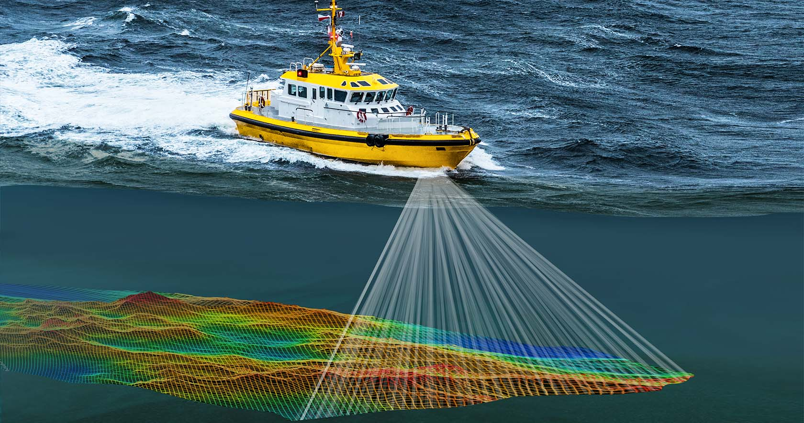
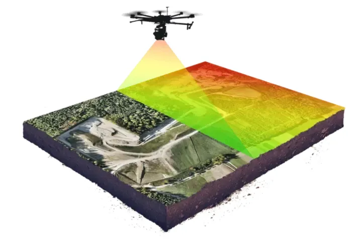

Land Survey Data Processing
We provide complete land survey data processing services designed to support civil engineering, infrastructure development, and urban planning projects. Our services include:
- GNSS Data Processing - High-precision Global Navigation Satellite System data reduction and analysis
- Coordinate Adjustment - Network adjustment and coordinate transformation for local and national datums
- Contour Generation - Professional contour line creation at various intervals for site analysis
- Terrain Modelling - 3D digital terrain models and surface representation for engineering design
- CAD Surface Creation - Export to AutoCAD, Civil 3D, and other CAD platforms for seamless integration

Hydrographic Survey Data Processing
Our hydrographic data processing expertise supports coastal engineering, port development, and environmental monitoring projects. We deliver:
- Bathymetric Data Cleaning - Quality control, filtering, and anomaly detection in underwater survey data
- Tide Correction - Accurate water level reduction and tidal reference datum adjustment
- Seabed Modelling - 3D underwater surface creation and substrate analysis
- Dredging Analysis - Volume calculations, sediment assessment, and maintenance dredging optimization
- Chart Preparation - Nautical chart creation, hydrographic visualization, and ENC (Electronic Navigational Chart) production

Drone and LiDAR Data Processing
Modern surveying demands cutting-edge drone and LiDAR technologies. We provide advanced processing including:
- Orthomosaic Generation - Seamless high-resolution aerial imagery mosaics with georeferencing
- Digital Elevation Models (DEM) - High-precision elevation datasets for terrain analysis and planning
- Point Cloud Classification - Automated and manual classification of LiDAR point clouds into meaningful categories
- Volumetric Analysis - Accurate volume calculation for stockpiles, earthworks, and environmental monitoring
- Orthophoto Processing - Multi-spectral analysis and thermal data integration for specialized applications
Quality Assurance & Standards Compliance
All our deliverables undergo rigorous quality assurance processes to ensure accuracy and compliance with industry standards:
- Adherence to international surveying standards and accuracy classes
- Comprehensive metadata documentation and data lineage tracking
- Multiple validation stages throughout the processing workflow
- Standard-compliant output formats (GeoTIFF, shapefile, LAS, xyz, DWG, etc.)
- Detailed processing reports and quality metrics for every project